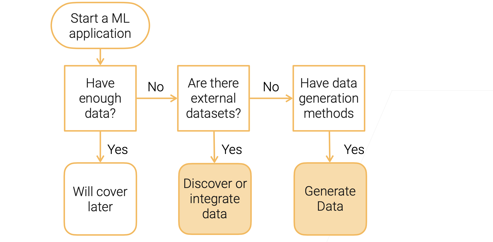

1.1、数据获取 —— 《Practical Machine Learning》
该系列内容参考斯坦福 CS329P
课程地址：https://c.d2l.ai/stanford-cs329p/
Bilili：https://www.bilibili.com/video/BV13U4y1N7Uo/
数据获取的流程

图1 数据收集的流程
寻找可用数据集
数据收集案例
- 案例一 验证超参数调参算法: 寻找大量不同任务类型的数据集，数据集不要过大
- 案例二 训练比较深的神经网络: 寻找较大的数据集
- 案例三 自动驾驶: 在车上安装各种传感器如摄像头，激光雷达等让人在不同场景下去开收集数据集
常见数据集的来源
- MNIST: US Census Bureau的员工手写的数据集
- ImageNet: 来自各种搜索引擎的数百万张图片
- AudioSet: Youtube 声音切片数据集用于声音分类
- Kinetics: Youtube 视频切片数据集用于动作识别
- KITTI: 自动驾驶数据集包括相机和其他传感器
- Amazon Review: 亚马逊在线商城顾客评论数据集
- SQuAD: Wikipedia 上抽取的问答数据集
- LibriSpeech: 1000小时的有声读物
更多数据集可以参考https://en.wikipedia.org/wiki/List_of_datasets_for_machine-learning_research
可以看出数据集的两大来源
- 网络爬取
- 数据采集
可以获得在线数据集的网站
- Paperswithcodes Datasets: 学术界中论文用到的数据集
- Kaggle Datasets: 数据科学家上传的各种机器学习数据集
- Google Dataset search: google 数据集搜索引擎
- 机器学习库: tensorflow, huggingface
- 大量会议和公司举办的机器学习竞赛
- Open Data on AWS: 100+ 庞大的原始数据
- 公司内部的数据湖
不同类型数据集对比
| 优点 | 缺点 | |
|---|---|---|
| 学术数据集 | 干净，难度适中 | 选择有限，种类单一，通常数据量比较小 |
| 竞赛数据集 | 贴近真实的机器学习应用 | 品种单一，只有一些比较热的研究方向的数据集 |
| 原始数据 | 十分灵活 | 需要大量的预处理工作 |
数据融合
多种来源的数据集合并到一个统一的数据集中
数据融合中的问题
数据缺失，数据冲突
数据生成
有时候我们无法获得足够的数据，数据采集难度又大可以生成一些数据集
- GAN
- 数据扩增
总结
- 很难找到合适的数据
- 工业中的原始数据和学术数据对比
- 多源数据集融合
- 数据扩增
- GAN生成数据
本博客所有文章除特别声明外，均采用 CC BY-NC-SA 4.0 许可协议。转载请注明来自 数据工程师养成博客！
相关推荐

评论
ValineDisqus